TFX on Cloud AI Platform Pipelines¶
Introduction¶
This tutorial is designed to introduce TensorFlow Extended (TFX) and [AIPlatform Pipelines] (https://cloud.google.com/ai-platform/pipelines/docs/introduction), and help you learn to create your own machine learning pipelines on Google Cloud. It shows integration with TFX, AI Platform Pipelines, and Kubeflow, as well as interaction with TFX in Jupyter notebooks.
At the end of this tutorial, you will have created and run an ML Pipeline, hosted on Google Cloud. You'll be able to visualize the results of each run, and view the lineage of the created artifacts.
Key Term
A TFX pipeline is a Directed Acyclic Graph, or "DAG". We will often refer to pipelines as DAGs.
You'll follow a typical ML development process, starting by examining the dataset, and ending up with a complete working pipeline. Along the way you'll explore ways to debug and update your pipeline, and measure performance.
Note
Completing this tutorial may take 45-60 minutes.
Chicago Taxi Dataset¶
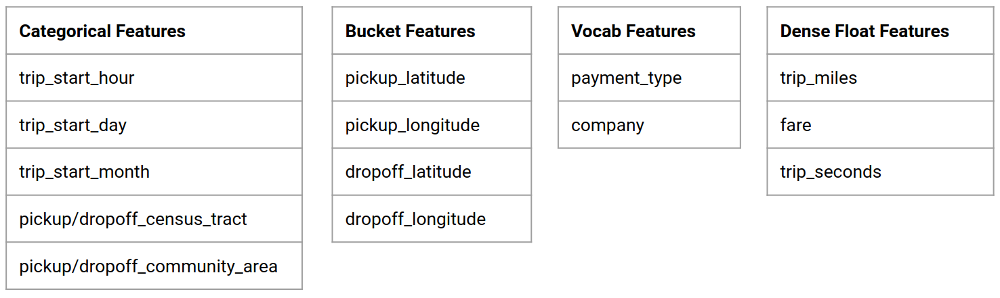
You're using the Taxi Trips dataset released by the City of Chicago.
Note
This site provides applications using data that has been modified for use from its original source, www.cityofchicago.org, the official website of the City of Chicago. The City of Chicago makes no claims as to the content, accuracy, timeliness, or completeness of any of the data provided at this site. The data provided at this site is subject to change at any time. It is understood that the data provided at this site is being used at one’s own risk.
You can read more about the dataset in Google BigQuery. Explore the full dataset in the BigQuery UI.
Model Goal - Binary classification¶
Will the customer tip more or less than 20%?
1. Set up a Google Cloud project¶
1.a Set up your environment on Google Cloud¶
To get started, you need a Google Cloud Account. If you already have one, skip ahead to Create New Project.
Warning
This demo is designed to not exceed Google Cloud's Free Tier limits. If you already have a Google Account, you may have reached your Free Tier limits, or exhausted any free Google Cloud credits given to new users. If that is the case, following this demo will result in charges to your Google Cloud account.
-
Go to the Google Cloud Console.
-
Agree to Google Cloud terms and conditions
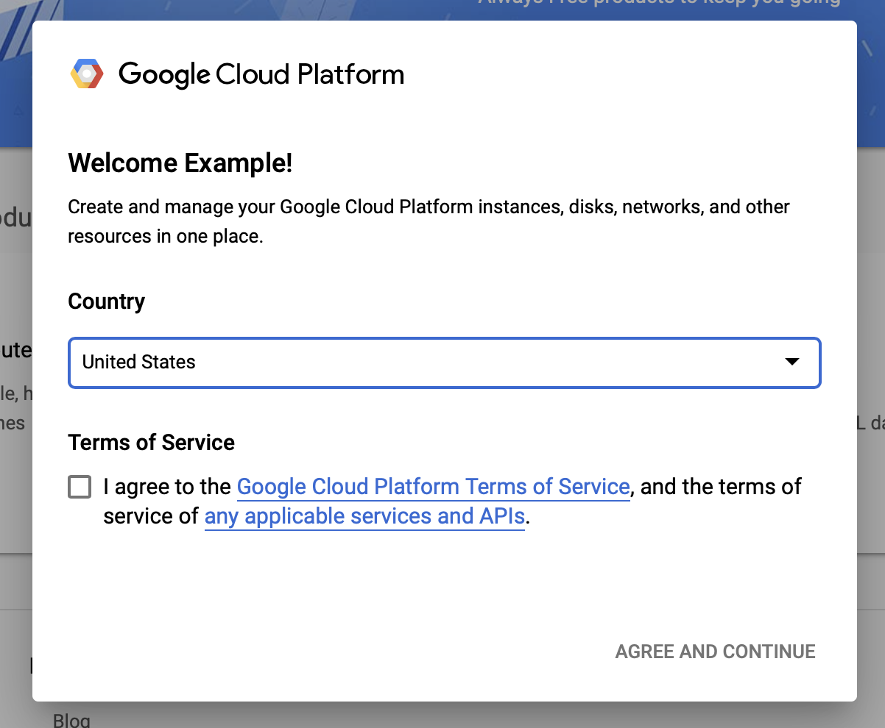
-
If you would like to start with a free trial account, click on Try For Free (or Get started for free).
-
Select your country.
-
Agree to the terms of service.
-
Enter billing details.
You will not be charged at this point. If you have no other Google Cloud projects, you can complete this tutorial without exceeding the Google Cloud Free Tier limits, which includes a max of 8 cores running at the same time.
-
Note
You can choose at this point to become a paid user instead of relying on the free trial. Since this tutorial stays within the Free Tier limits, you still won't be charged if this is your only project and you stay within those limits. For more details, see Google Cloud Cost Calculator and Google Cloud Platform Free Tier.
1.b Create a new project.¶
Note
This tutorial assumes you want to work on this demo in a new project. You can, if you want, work in an existing project.
Note
You must have a verified credit card on file before creating the project.
- From the main Google Cloud dashboard, click the project dropdown next to the Google Cloud Platform header, and select New Project.
- Give your project a name and enter other project details
- Once you have created a project, make sure to select it from the project drop-down.
2. Set up and deploy an AI Platform Pipeline on a new Kubernetes cluster¶
Note
This will take up to 10 minutes, as it requires waiting at several points for resources to be provisioned.
-
Go to the AI Platform Pipelines Clusters page.
Under the Main Navigation Menu: ≡ > AI Platform > Pipelines
-
Click + New Instance to create a new cluster.
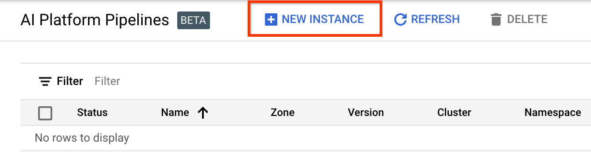
-
On the Kubeflow Pipelines overview page, click Configure.
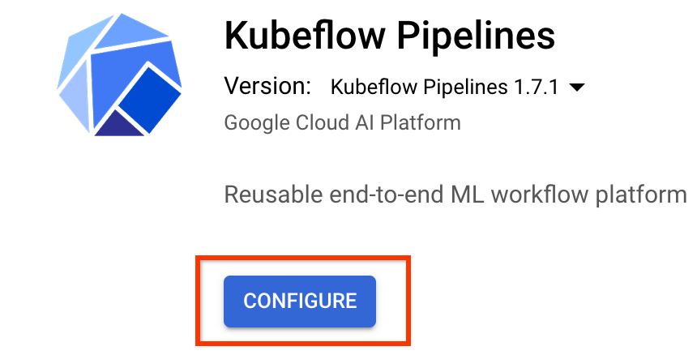
-
Click "Enable" to enable the Kubernetes Engine API
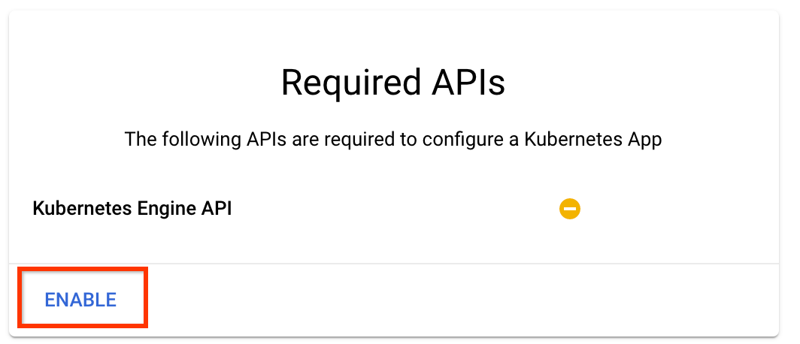
Note
You may have to wait several minutes before moving on, while the Kubernetes Engine APIs are being enabled for you.
-
On the Deploy Kubeflow Pipelines page:
-
Select a zone (or "region") for your cluster. The network and subnetwork can be set, but for the purposes of this tutorial we will leave them as defaults.
-
IMPORTANT Check the box labeled Allow access to the following cloud APIs. (This is required for this cluster to access the other pieces of your project. If you miss this step, fixing it later is a bit tricky.)
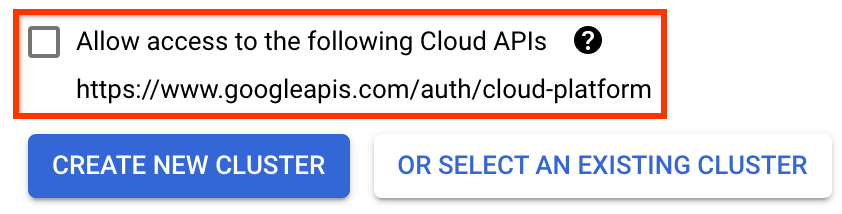
-
Click Create New Cluster, and wait several minutes until the cluster has been created. This will take a few minutes. When it completes you will see a message like:
Cluster "cluster-1" successfully created in zone "us-central1-a".
-
Select a namespace and instance name (using the defaults is fine). For the purposes of this tutorial do not check executor.emissary or managedstorage.enabled.
-
Click Deploy, and wait several moments until the pipeline has been deployed. By deploying Kubeflow Pipelines, you accept the Terms of Service.
-
3. Set up Cloud AI Platform Notebook instance.¶
-
Go to the Vertex AI Workbench page. The first time you run Workbench you will need to enable the Notebooks API.
Under the Main Navigation Menu: ≡ -> Vertex AI -> Workbench
-
If prompted, enable the Compute Engine API.
-
Create a New Notebook with TensorFlow Enterprise 2.7 (or above) installed.
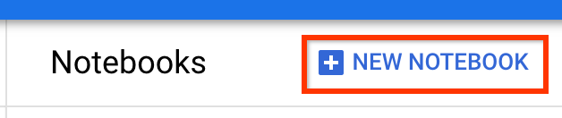
New Notebook -> TensorFlow Enterprise 2.7 -> Without GPU
Select a region and zone, and give the notebook instance a name.
To stay within the Free Tier limits, you may need to change the default settings here to reduce the number of vCPUs available to this instance from 4 to 2:
- Select Advanced Options at the bottom of the New notebook form.
-
Under Machine configuration you may want to select a configuration with 1 or 2 vCPUs if you need to stay in the free tier.
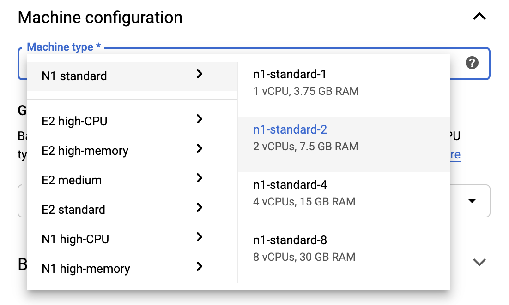
-
Wait for the new notebook to be created, and then click Enable Notebooks API
Note
You may experience slow performance in your notebook if you use 1 or 2 vCPUs instead of the default or higher. This should not seriously hinder your completion of this tutorial. If would like to use the default settings, upgrade your account to at least 12 vCPUs. This will accrue charges. See Google Kubernetes Engine Pricing for more details on pricing, including a pricing calculator and information about the Google Cloud Free Tier.
4. Launch the Getting Started Notebook¶
-
Go to the [AI Platform Pipelines Clusters] (https://console.cloud.google.com/ai-platform/pipelines) page.
Under the Main Navigation Menu: ≡ -> AI Platform -> Pipelines
-
On the line for the cluster you are using in this tutorial, click Open Pipelines Dashboard.
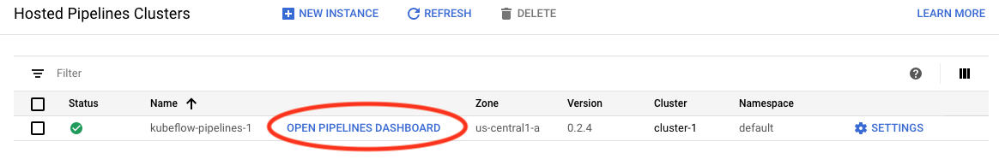
-
On the Getting Started page, click Open a Cloud AI Platform Notebook on Google Cloud.
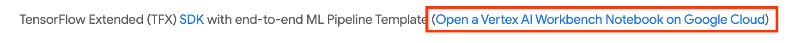
-
Select the Notebook instance you are using for this tutorial and Continue, and then Confirm.
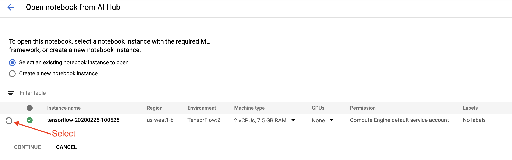
5. Continue working in the Notebook¶
Important: The rest of this tutorial should be completed in Jupyter Lab Notebook you opened in the previous step. The instructions and explanations are available here as a reference.
Install¶
The Getting Started Notebook starts by installing TFX and Kubeflow Pipelines (KFP) into the VM which Jupyter Lab is running in.
It then checks which version of TFX is installed, does an import, and sets and prints the Project ID:
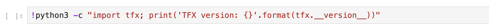
Connect with your Google Cloud services¶
The pipeline configuration needs your project ID, which you can get through the notebook and set as an environmental variable.
# Read GCP project id from env.
shell_output=!gcloud config list --format 'value(core.project)' 2>/dev/null
GCP_PROJECT_ID=shell_output[0]
print("GCP project ID:" + GCP_PROJECT_ID)
Now set your KFP cluster endpoint.
This can be found from the URL of the Pipelines dashboard. Go to the Kubeflow
Pipeline dashboard and look at the URL. The endpoint is everything in the URL
starting with the https://, up to, and including, googleusercontent.com.
The notebook then sets a unique name for the custom Docker image:
# Docker image name for the pipeline image
CUSTOM_TFX_IMAGE='gcr.io/' + GCP_PROJECT_ID + '/tfx-pipeline'
6. Copy a template into your project directory¶
Edit the next notebook cell to set a name for your pipeline. In this tutorial we
will use my_pipeline.
PIPELINE_NAME="my_pipeline"
PROJECT_DIR=os.path.join(os.path.expanduser("~"),"imported",PIPELINE_NAME)
The notebook then uses the tfx CLI to copy the pipeline template. This
tutorial uses the Chicago Taxi dataset to perform binary classification, so the
template sets the model to taxi:
!tfx template copy \
--pipeline-name={PIPELINE_NAME} \
--destination-path={PROJECT_DIR} \
--model=taxi
The notebook then changes its CWD context to the project directory:
Browse the pipeline files¶
On the left-hand side of the Cloud AI Platform Notebook, you should see a file
browser. There should be a directory with your pipeline name (my_pipeline).
Open it and view the files. (You'll be able to open them and edit from the
notebook environment as well.)
The tfx template copy command above created a basic scaffold of files that
build a pipeline. These include Python source codes, sample data, and Jupyter
notebooks. These are meant for this particular example. For your own pipelines
these would be the supporting files that your pipeline requires.
Here is brief description of the Python files.
pipeline- This directory contains the definition of the pipelineconfigs.py— defines common constants for pipeline runnerspipeline.py— defines TFX components and a pipeline
models- This directory contains ML model definitions.features.pyfeatures_test.py— defines features for the modelpreprocessing.py/preprocessing_test.py— defines preprocessing jobs usingtf::Transformkeras- This directory contains a Keras based model.constants.py— defines constants of the modelmodel.py/model_test.py— defines DNN model using Keras
beam_runner.py/kubeflow_runner.py— define runners for each orchestration engine
7. Run your first TFX pipeline on Kubeflow¶
The notebook will run the pipeline using the tfx run CLI command.
Connect to storage¶
Running pipelines create artifacts which have to be stored in
ML-Metadata. Artifacts refer to
payloads, which are files that must be stored in a file system or block storage.
For this tutorial, we'll use GCS to store our metadata payloads, using the
bucket that was created automatically during setup.
Its name will be <your-project-id>-kubeflowpipelines-default.
Create the pipeline¶
The notebook will upload our sample data to GCS bucket so that we can use it in our pipeline later.
!gsutil cp data/data.csv gs://{GOOGLE_CLOUD_PROJECT}-kubeflowpipelines-default/tfx-template/data/taxi/data.csv
The notebook then uses the tfx pipeline create command to create the pipeline.
While creating a pipeline, Dockerfile will be generated to build a Docker
image. Don't forget to add these files to your source control system (for
example, git) along with other source files.
Run the pipeline¶
The notebook then uses the tfx run create command to start an execution run of
your pipeline. You will also see this run listed under Experiments in the
Kubeflow Pipelines Dashboard.
You can view your pipeline from the Kubeflow Pipelines Dashboard.
Note
If your pipeline run fails, you can see detailed logs in the KFP Dashboard. One of the major sources of failure is permission related problems. Make sure your KFP cluster has permissions to access Google Cloud APIs. This can be configured when you create a KFP cluster in GCP, or see Troubleshooting document in GCP.
8. Validate your data¶
The first task in any data science or ML project is to understand and clean the data.
- Understand the data types for each feature
- Look for anomalies and missing values
- Understand the distributions for each feature
Components¶
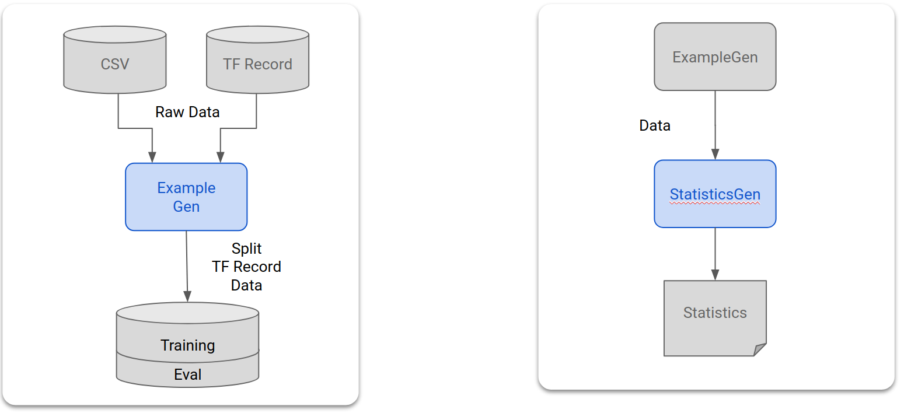 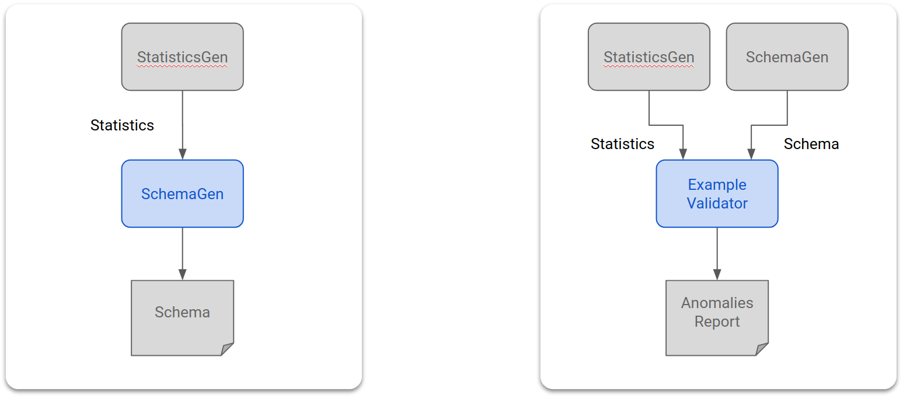
- ExampleGen ingests and splits the input dataset.
- StatisticsGen calculates statistics for the dataset.
- SchemaGen SchemaGen examines the statistics and creates a data schema.
- ExampleValidator looks for anomalies and missing values in the dataset.
In Jupyter lab file editor:¶
In pipeline/pipeline.py, uncomment the lines which append these components
to your pipeline:
# components.append(statistics_gen)
# components.append(schema_gen)
# components.append(example_validator)
(ExampleGen was already enabled when the template files were copied.)
Update the pipeline and re-run it¶
# Update the pipeline
! tfx pipeline update \
--pipeline-path=kubeflow_runner.py \
--endpoint={ENDPOINT}
! tfx run create --pipeline-name "{PIPELINE_NAME}"
Check the pipeline¶
For Kubeflow Orchestrator, visit KFP dashboard and find pipeline outputs in the page for your pipeline run. Click "Experiments" tab on the left, and "All runs" in the Experiments page. You should be able to find the run with the name of your pipeline.
More advanced example¶
The example presented here is really only meant to get you started. For a more advanced example see the TensorFlow Data Validation Colab.
For more information on using TFDV to explore and validate a dataset, see the examples on tensorflow.org.
9. Feature engineering¶
You can increase the predictive quality of your data and/or reduce dimensionality with feature engineering.
- Feature crosses
- Vocabularies
- Embeddings
- PCA
- Categorical encoding
One of the benefits of using TFX is that you will write your transformation code once, and the resulting transforms will be consistent between training and serving.
Components¶
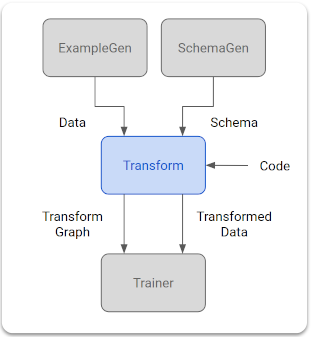
- Transform performs feature engineering on the dataset.
In Jupyter lab file editor:¶
In pipeline/pipeline.py, find and uncomment the line which appends
Transform to the pipeline.
Update the pipeline and re-run it¶
# Update the pipeline
! tfx pipeline update \
--pipeline-path=kubeflow_runner.py \
--endpoint={ENDPOINT}
! tfx run create --pipeline-name "{PIPELINE_NAME}"
Check pipeline outputs¶
For Kubeflow Orchestrator, visit KFP dashboard and find pipeline outputs in the page for your pipeline run. Click "Experiments" tab on the left, and "All runs" in the Experiments page. You should be able to find the run with the name of your pipeline.
More advanced example¶
The example presented here is really only meant to get you started. For a more advanced example see the TensorFlow Transform Colab.
10. Training¶
Train a TensorFlow model with your nice, clean, transformed data.
- Include the transformations from the previous step so that they are applied consistently
- Save the results as a SavedModel for production
- Visualize and explore the training process using TensorBoard
- Also save an EvalSavedModel for analysis of model performance
Components¶
- Trainer trains a TensorFlow model.
In Jupyter lab file editor:¶
In pipeline/pipeline.py, find and uncomment the which appends Trainer to the
pipeline:
Update the pipeline and re-run it¶
# Update the pipeline
! tfx pipeline update \
--pipeline-path=kubeflow_runner.py \
--endpoint={ENDPOINT}
! tfx run create --pipeline-name "{PIPELINE_NAME}"
Check pipeline outputs¶
For Kubeflow Orchestrator, visit KFP dashboard and find pipeline outputs in the page for your pipeline run. Click "Experiments" tab on the left, and "All runs" in the Experiments page. You should be able to find the run with the name of your pipeline.
More advanced example¶
The example presented here is really only meant to get you started. For a more advanced example see the TensorBoard Tutorial.
11. Analyzing model performance¶
Understanding more than just the top level metrics.
- Users experience model performance for their queries only
- Poor performance on slices of data can be hidden by top level metrics
- Model fairness is important
- Often key subsets of users or data are very important, and may be small
- Performance in critical but unusual conditions
- Performance for key audiences such as influencers
- If you’re replacing a model that is currently in production, first make sure that the new one is better
Components¶
- Evaluator performs deep analysis of the training results.
In Jupyter lab file editor:¶
In pipeline/pipeline.py, find and uncomment the line which appends Evaluator
to the pipeline:
Update the pipeline and re-run it¶
# Update the pipeline
! tfx pipeline update \
--pipeline-path=kubeflow_runner.py \
--endpoint={ENDPOINT}
! tfx run create --pipeline-name "{PIPELINE_NAME}"
Check pipeline outputs¶
For Kubeflow Orchestrator, visit KFP dashboard and find pipeline outputs in the page for your pipeline run. Click "Experiments" tab on the left, and "All runs" in the Experiments page. You should be able to find the run with the name of your pipeline.
12. Serving the model¶
If the new model is ready, make it so.
- Pusher deploys SavedModels to well-known locations
Deployment targets receive new models from well-known locations
- TensorFlow Serving
- TensorFlow Lite
- TensorFlow JS
- TensorFlow Hub
Components¶
- Pusher deploys the model to a serving infrastructure.
In Jupyter lab file editor:¶
In pipeline/pipeline.py, find and uncomment the line that appends Pusher to
the pipeline:
Check pipeline outputs¶
For Kubeflow Orchestrator, visit KFP dashboard and find pipeline outputs in the page for your pipeline run. Click "Experiments" tab on the left, and "All runs" in the Experiments page. You should be able to find the run with the name of your pipeline.
Available deployment targets¶
You have now trained and validated your model, and your model is now ready for production. You can now deploy your model to any of the TensorFlow deployment targets, including:
- TensorFlow Serving, for serving your model on a server or server farm and processing REST and/or gRPC inference requests.
- TensorFlow Lite, for including your model in an Android or iOS native mobile application, or in a Raspberry Pi, IoT, or microcontroller application.
- TensorFlow.js, for running your model in a web browser or Node.JS application.
More advanced examples¶
The example presented above is really only meant to get you started. Below are some examples of integration with other Cloud services.
Kubeflow Pipelines resource considerations¶
Depending on the requirements of your workload, the default configuration for
your Kubeflow Pipelines deployment may or may not meet your needs. You can
customize your resource configurations using pipeline_operator_funcs in your
call to KubeflowDagRunnerConfig.
pipeline_operator_funcs is a list of OpFunc items, which transforms all the
generated ContainerOp instances in the KFP pipeline spec which is compiled
from KubeflowDagRunner.
For example, to configure memory we can use
set_memory_request
to declare the amount of memory needed. A typical way to do that is to create a
wrapper for set_memory_request and use it to add to to the list of pipeline
OpFuncs:
def request_more_memory():
def _set_memory_spec(container_op):
container_op.set_memory_request('32G')
return _set_memory_spec
# Then use this opfunc in KubeflowDagRunner
pipeline_op_funcs = kubeflow_dag_runner.get_default_pipeline_operator_funcs()
pipeline_op_funcs.append(request_more_memory())
config = KubeflowDagRunnerConfig(
pipeline_operator_funcs=pipeline_op_funcs,
...
)
kubeflow_dag_runner.KubeflowDagRunner(config=config).run(pipeline)
Similar resource configuration functions include:
set_memory_limitset_cpu_requestset_cpu_limitset_gpu_limit
Try BigQueryExampleGen¶
BigQuery is a serverless, highly scalable,
and cost-effective cloud data warehouse. BigQuery can be used as a source for
training examples in TFX. In this step, we will add BigQueryExampleGen to the
pipeline.
In Jupyter lab file editor:¶
Double-click to open pipeline.py. Comment out CsvExampleGen and
uncomment the line which creates an instance of BigQueryExampleGen. You also
need to uncomment the query argument of the create_pipeline function.
We need to specify which GCP project to use for BigQuery, and this is done by
setting --project in beam_pipeline_args when creating a pipeline.
Double-click to open configs.py. Uncomment the definition of
BIG_QUERY_WITH_DIRECT_RUNNER_BEAM_PIPELINE_ARGS and BIG_QUERY_QUERY. You
should replace the project id and the region value in this file with the correct
values for your GCP project.
Note
You MUST set your GCP project ID and region in the configs.py file
before proceeding.
Change directory one level up. Click the name of the directory above the
file list. The name of the directory is the name of the pipeline which is
my_pipeline if you didn't change the pipeline name.
Double-click to open kubeflow_runner.py. Uncomment two arguments, query
and beam_pipeline_args, for the create_pipeline function.
Now the pipeline is ready to use BigQuery as an example source. Update the pipeline as before and create a new execution run as we did in step 5 and 6.
Update the pipeline and re-run it¶
# Update the pipeline
!tfx pipeline update \
--pipeline-path=kubeflow_runner.py \
--endpoint={ENDPOINT}
!tfx run create --pipeline-name {PIPELINE_NAME} --endpoint={ENDPOINT}
Try Dataflow¶
Several TFX Components use Apache Beam to implement data-parallel pipelines, and it means that you can distribute data processing workloads using Google Cloud Dataflow. In this step, we will set the Kubeflow orchestrator to use Dataflow as the data processing back-end for Apache Beam.
Note
If the Dataflow API is not already enabled, you can enable it using the console, or from the CLI using this command (for example, in the Cloud Shell):
# Select your project:
gcloud config set project YOUR_PROJECT_ID
# Get a list of services that you can enable in your project:
gcloud services list --available | grep Dataflow
# If you don't see dataflow.googleapis.com listed, that means you haven't been
# granted access to enable the Dataflow API. See your account adminstrator.
# Enable the Dataflow service:
gcloud services enable dataflow.googleapis.com
Note
Execution speed may be limited by default
Google Compute Engine (GCE) quota. We
recommend setting a sufficient quota for approximately 250 Dataflow VMs: 250
CPUs, 250 IP Addresses, and 62500 GB of Persistent Disk. For more details,
please see the GCE Quota and
Dataflow Quota documentation. If
you are blocked by IP Address quota, using a bigger
worker_type
will reduce the number of needed IPs.
Double-click pipeline to change directory, and double-click to open
configs.py. Uncomment the definition of GOOGLE_CLOUD_REGION, and
DATAFLOW_BEAM_PIPELINE_ARGS.
Change directory one level up. Click the name of the directory above the
file list. The name of the directory is the name of the pipeline which is
my_pipeline if you didn't change.
Double-click to open kubeflow_runner.py. Uncomment beam_pipeline_args.
(Also make sure to comment out current beam_pipeline_args that you added in
Step 7.)
Update the pipeline and re-run it¶
# Update the pipeline
!tfx pipeline update \
--pipeline-path=kubeflow_runner.py \
--endpoint={ENDPOINT}
!tfx run create --pipeline-name {PIPELINE_NAME} --endpoint={ENDPOINT}
You can find your Dataflow jobs in Dataflow in Cloud Console.
Try Cloud AI Platform Training and Prediction with KFP¶
TFX interoperates with several managed GCP services, such as
Cloud AI Platform for Training and Prediction.
You can set your Trainer component to use Cloud AI Platform Training, a
managed service for training ML models. Moreover, when your model is built and
ready to be served, you can push your model to Cloud AI Platform Prediction
for serving. In this step, we will set our Trainer and Pusher component to
use Cloud AI Platform services.
Before editing files, you might first have to enable AI Platform Training & Prediction API.
Double-click pipeline to change directory, and double-click to open
configs.py. Uncomment the definition of GOOGLE_CLOUD_REGION,
GCP_AI_PLATFORM_TRAINING_ARGS and GCP_AI_PLATFORM_SERVING_ARGS. We will use
our custom built container image to train a model in Cloud AI Platform Training,
so we should set masterConfig.imageUri in GCP_AI_PLATFORM_TRAINING_ARGS to
the same value as CUSTOM_TFX_IMAGE above.
Change directory one level up, and double-click to open
kubeflow_runner.py. Uncomment ai_platform_training_args and
ai_platform_serving_args.
Note
If you receive a permissions error in the Training step, you may need to provide Storage Object Viewer permissions to the Cloud Machine Learning Engine (AI Platform Prediction & Training) service account. More information is available in the Container Registry documentation.
Update the pipeline and re-run it¶
# Update the pipeline
!tfx pipeline update \
--pipeline-path=kubeflow_runner.py \
--endpoint={ENDPOINT}
!tfx run create --pipeline-name {PIPELINE_NAME} --endpoint={ENDPOINT}
You can find your training jobs in Cloud AI Platform Jobs. If your pipeline completed successfully, you can find your model in Cloud AI Platform Models.
14. Use your own data¶
In this tutorial, you made a pipeline for a model using the Chicago Taxi dataset. Now try putting your own data into the pipeline. Your data can be stored anywhere the pipeline can access it, including Google Cloud Storage, BigQuery, or CSV files.
You need to modify the pipeline definition to accommodate your data.
If your data is stored in files¶
- Modify
DATA_PATHinkubeflow_runner.py, indicating the location.
If your data is stored in BigQuery¶
- Modify
BIG_QUERY_QUERYin configs.py to your query statement. - Add features in
models/features.py. - Modify
models/preprocessing.pyto transform input data for training. - Modify
models/keras/model.pyandmodels/keras/constants.pyto describe your ML model.
Learn more about Trainer¶
See Trainer component guide for more details on Training pipelines.
Cleaning up¶
To clean up all Google Cloud resources used in this project, you can delete the Google Cloud project you used for the tutorial.
Alternatively, you can clean up individual resources by visiting each consoles: - Google Cloud Storage - Google Container Registry - Google Kubernetes Engine